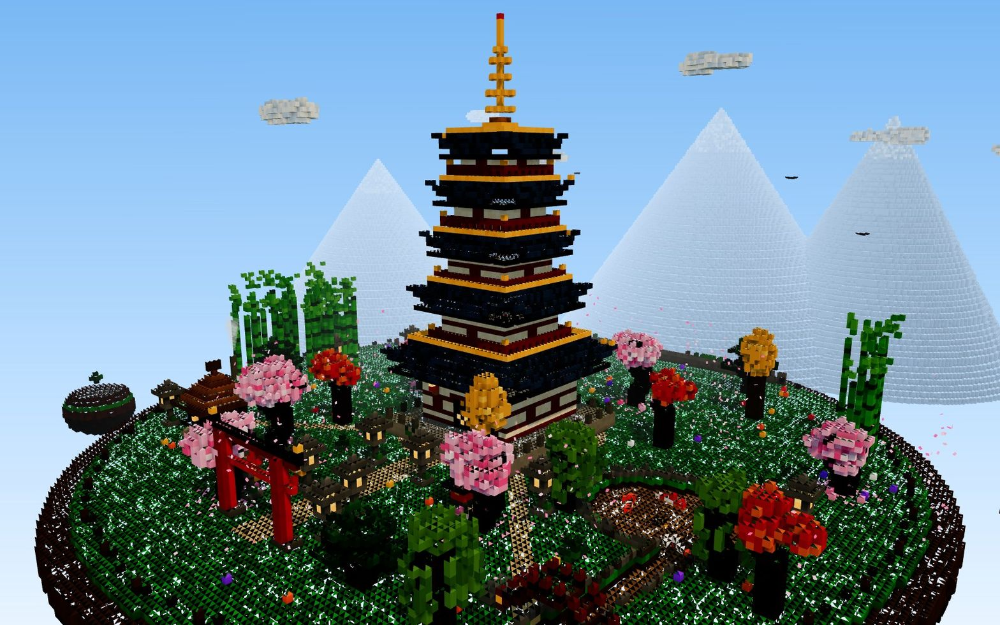
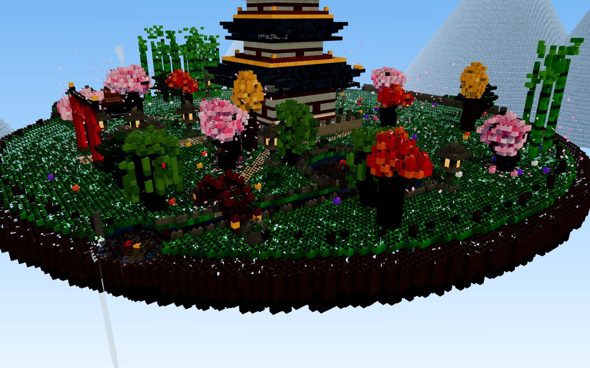
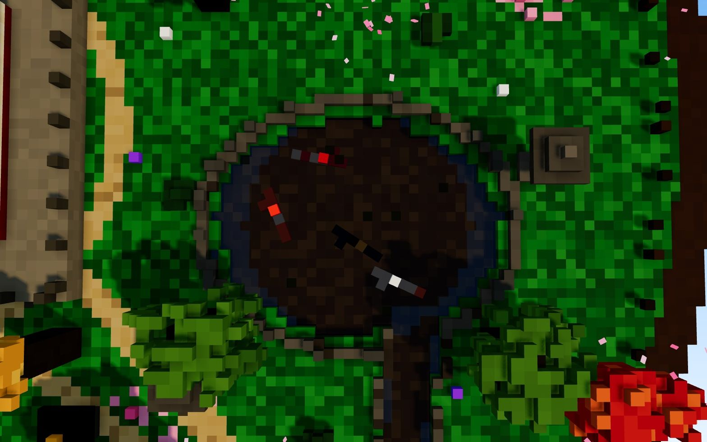
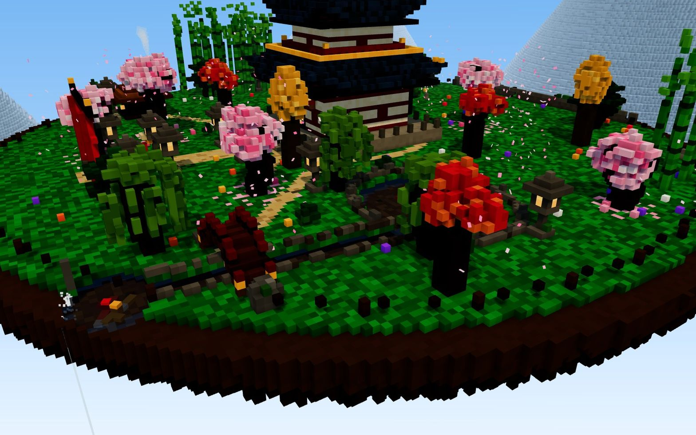
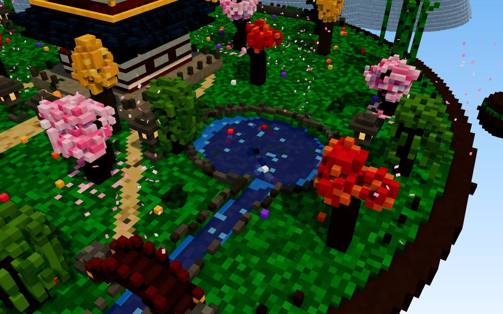
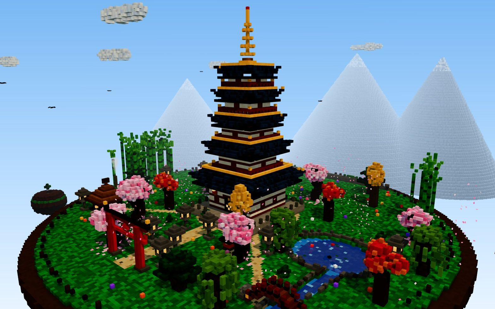

runs / 2026-10-19 / 092852-986000-baseline-53827ae2
54分100コールで単一HTMLのボクセル五重塔庭園を完成、水と地形をスクショ反復で修正
qwen3.8-flash-next-unsloth-ud-q4_k_xl（thinking high）が、ボクセル五重塔庭園の単一HTMLを3258.9秒・100コール・出力135,995トークンで completed（exit 0）した。最初の約44%（#1〜#3）で環境確認・構想・ファイル生成と全面書き換えを終え、以後はヘッドレスブラウザでの eval 実行とスクショレビューによる修正反復に充てた。成果物は pagoda-garden.html（45,395バイト）1点。
成果物
work/pagoda-garden.html（45,395 バイト）をそのまま同梱している。重いシーンもあるため、必要なときだけ起動する。
pagoda-garden.html
44 KB · 起動するまで読み込まない












全 17 枚から等間隔に 12 枚を選んでいる。logs/events.jsonl の画像ブロックを内容ハッシュで重複排除して時系列に並べた、制作中の検証用スクリーンショット。最終版とは限らない。
成果物の構成
| 要素 | 内容 |
|---|---|
| 成果物 | pagoda-garden.html 単一ファイル（45KB）。Three.jsはCDNインポートで要ネット接続、他は全てコード内で生成 |
| 規模と検証 | 170万ボクセルを顔面カリングとマージジオメトリで約65万三角形に圧縮、コンソールエラー0、ヘッドレスChromiumで多視点スクショ検証 |
| 五重塔 | 漆喰壁と縞柱、朱の梁、四面格子窓、内部発光の扉、2〜5層の欄干と金の鬼、反り屋根、風鈴、シャチホコ、九輪と火珠 |
| 庭 | 石畳の朱鳥居、9基の発光石灯籠、鯉6匹が泳ぐ蓮の池と半透明の水面、石橋、縁から落ちる24ブロックの滝、煙を出す茶屋、禅園、祠、地蔵 |
| 樹木 | 桜6本と風で流れる散り桜420個、庭師仕上げの松、カエデ、イチョウ、枝垂柳、50茎の竹藪、苔岩、野花、島裏の蔓、浮島2つ |
| 空と生き物 | 流れるvoxel雲、周回する鳥、太陽と月のスプライト、星のドーム、夜の蛍 |
| 昼夜切替 | 空の勾配・霧・半球/環境/月光・灯籠6点の明滅・水面と雲の色がクロスフェード、頂点AOベイク |
| 修正した実バグ3件 | AOメッシュ構築の半四边形の巻き誤りで地形に穴、水面メッシュの法線欠落、Phong鏡面反射で池が灰色化 |
モデルの最終メッセージから読み取った内容。コードの確認はしていない。
タイムライン
100 回の API 呼び出しを時間順に並べた。上段の帯の幅が各呼び出しの所要時間で、帯の間の空白がツールの実行時間。下段はその時点のコンテキスト長。
最も長い 2 回の生成（#3 559 秒・#2 526 秒）で 1084.6 秒、壁時計の 33.3%。出力トークンの上位 4 回（#3・#2・#1・#6）で全体の 60.0%（81,589 / 135,995）。推論以外（ツール実行など）は約 356 秒（11%）。
フェーズ別の内訳
| フェーズ | 経過 | 所要 | 全体に占める割合 | 呼び出し | 出力 tok | 何をしたか |
|---|---|---|---|---|---|---|
| 環境と初稿 | 0:00–23:42 | 1422 秒 | 43.7% | 3 | 78,020 | ワークスペースとCDN到達性を確認しブラウザ自動化ドキュメントを読んだ後、場を構想して#2（526.0s、30,390tok）でファイルを書き、#3（558.6s、31,099tok）で修正版に全面書き換えた。 |
| 静的修正 | 23:42–25:49 | 127 秒 | 3.9% | 8 | 5,454 | grep/readで該当行を特定し、小数座標・鳥居基壇・鳥の向き・香炉の接地をeditで修正、bashの構文チェックで締めた。 |
| ブラウザ検証 | 25:49–30:17 | 267 秒 | 8.2% | 20 | 8,538 | evalでヘッドレスブラウザのJSを反復実行し、エラー捕捉スクリプト・一時デバッグフック・readPixelsプローブ・昼夜初期化を順に追加して再実行した。 |
| 色調調整 | 30:17–34:32 | 255 秒 | 7.8% | 16 | 10,638 | 昼・池・夜のスクショを確認してパレット・大気・ライトの増強をeditで反映し、デバッグフックをlook/snapヘルパーに置き換えて描画レビューを続けた。 |
| 水と地形 | 34:32–50:36 | 964 秒 | 29.6% | 40 | 28,626 | 水面法線、反転診断（#60、84.0s）、ボクセルグリッドダンプ、交差プローブで調査し、巻错错误で空いた地形穴を修正、最後に非ライティング青水面とスパークルへ作り替えた。 |
| 仕上げ検証 | 50:36–54:18 | 221 秒 | 6.8% | 13 | 4,719 | デバッグフックと残骸を削除し、デッキ・山色を調整、最終構文チェックと昼・夜・滝のスクショ確認を経て完了報告へ進んだ。 |
フェーズの切れ目は、ログから読み取れる作業内容の変わり目（LLM による区切り）。所要時間は、そのフェーズの最初の呼び出しの開始から次のフェーズの最初の呼び出しの開始まで。
100 回の呼び出しを表で見る
| # | 種別 | フェーズ | 開始 | 所要 秒 | prompt | うち cache | 出力 | tok/s | HTTP | ツール |
|---|---|---|---|---|---|---|---|---|---|---|
| 1 | 主ループ | 環境と初稿 | 0:00 | 337.2 | 7,805 | 7,624 | 16,531 | 50.2 | 200 | bash + read |
| 2 | 主ループ | 環境と初稿 | 5:37 | 526.0 | 27,501 | 7,800 | 30,390 | 58.6 | 200 | todo + write |
| 3 | 主ループ | 環境と初稿 | 14:23 | 558.6 | 58,095 | 27,496 | 31,099 | 56.8 | 200 | write |
| 4 | 主ループ | 静的修正 | 23:42 | 25.7 | 89,237 | 58,090 | 639 | 50.7 | 200 | read |
| 5 | 主ループ | 静的修正 | 24:08 | 2.6 | 90,228 | 89,876 | 82 | 54.8 | 200 | grep |
| 6 | 主ループ | 静的修正 | 24:11 | 70.5 | 90,642 | 90,311 | 3,569 | 51.4 | 200 | edit |
| 7 | 主ループ | 静的修正 | 25:21 | 4.0 | 94,378 | 94,211 | 144 | 46.6 | 200 | grep |
| 8 | 主ループ | 静的修正 | 25:25 | 9.4 | 95,173 | 94,523 | 426 | 54.9 | 200 | edit |
| 9 | 主ループ | 静的修正 | 25:34 | 4.6 | 96,259 | 95,600 | 155 | 48.1 | 200 | grep |
| 10 | 主ループ | 静的修正 | 25:39 | 6.0 | 96,656 | 96,414 | 274 | 53.8 | 200 | edit |
| 11 | 主ループ | 静的修正 | 25:45 | 4.2 | 97,219 | 96,929 | 165 | 53.2 | 200 | bash |
| 12 | 主ループ | ブラウザ検証 | 25:49 | 5.3 | 97,411 | 97,385 | 252 | 52.0 | 200 | eval |
| 13 | 主ループ | ブラウザ検証 | 26:01 | 4.2 | 97,978 | 97,665 | 182 | 57.3 | 200 | eval |
| 14 | 主ループ | ブラウザ検証 | 26:05 | 10.3 | 98,225 | 98,159 | 444 | 48.2 | 200 | eval |
| 15 | 主ループ | ブラウザ検証 | 26:16 | 8.6 | 98,687 | 98,668 | 444 | 54.0 | 200 | eval |
| 16 | 主ループ | ブラウザ検証 | 26:26 | 4.3 | 99,149 | 99,132 | 201 | 50.9 | 200 | eval |
| 17 | 主ループ | ブラウザ検証 | 26:31 | 15.2 | 99,388 | 99,352 | 680 | 46.6 | 200 | edit |
| 18 | 主ループ | ブラウザ検証 | 26:46 | 4.3 | 100,301 | 100,068 | 161 | 49.1 | 200 | read |
| 19 | 主ループ | ブラウザ検証 | 26:50 | 3.5 | 100,978 | 100,462 | 126 | 55.4 | 200 | edit |
| 20 | 主ループ | ブラウザ検証 | 26:54 | 3.3 | 101,245 | 101,103 | 127 | 53.3 | 200 | eval |
| 21 | 主ループ | ブラウザ検証 | 27:12 | 3.5 | 101,388 | 101,372 | 160 | 50.7 | 200 | eval |
| 22 | 主ループ | ブラウザ検証 | 27:19 | 38.2 | 101,661 | 101,547 | 1,800 | 48.1 | 200 | todo + edit |
| 23 | 主ループ | ブラウザ検証 | 27:57 | 4.8 | 103,664 | 103,461 | 196 | 51.9 | 200 | edit |
| 24 | 主ループ | ブラウザ検証 | 28:02 | 6.4 | 104,024 | 103,860 | 288 | 52.1 | 200 | eval |
| 25 | 主ループ | ブラウザ検証 | 28:24 | 8.4 | 104,386 | 104,312 | 357 | 45.6 | 200 | eval |
| 26 | 主ループ | ブラウザ検証 | 28:34 | 23.8 | 104,808 | 104,744 | 1,132 | 49.6 | 200 | edit |
| 27 | 主ループ | ブラウザ検証 | 28:57 | 5.6 | 106,167 | 104,803 | 169 | 47.5 | 200 | grep |
| 28 | 主ループ | ブラウザ検証 | 29:03 | 9.7 | 106,483 | 106,336 | 442 | 50.2 | 200 | eval |
| 29 | 主ループ | ブラウザ検証 | 29:29 | 14.5 | 106,954 | 106,925 | 638 | 45.4 | 200 | edit |
| 30 | 主ループ | ブラウザ検証 | 29:43 | 8.2 | 107,704 | 107,592 | 368 | 50.2 | 200 | eval |
| 31 | 主ループ | ブラウザ検証 | 30:08 | 8.3 | 108,137 | 108,072 | 371 | 50.6 | 200 | eval |
| 32 | 主ループ | 色調調整 | 30:17 | 3.3 | 108,536 | 108,507 | 122 | 44.4 | 200 | read |
| 33 | 主ループ | 色調調整 | 30:20 | 58.0 | 110,263 | 108,658 | 2,592 | 46.5 | 200 | edit |
| 34 | 主ループ | 色調調整 | 31:18 | 3.9 | 113,023 | 112,855 | 124 | 43.0 | 200 | grep |
| 35 | 主ループ | 色調調整 | 31:22 | 36.0 | 114,030 | 113,018 | 1,831 | 53.6 | 200 | edit |
| 36 | 主ループ | 色調調整 | 31:58 | 5.7 | 116,260 | 115,860 | 209 | 46.8 | 200 | read |
| 37 | 主ループ | 色調調整 | 32:04 | 21.3 | 117,025 | 116,469 | 1,162 | 58.2 | 200 | edit |
| 38 | 主ループ | 色調調整 | 32:25 | 8.5 | 119,350 | 118,187 | 306 | 45.8 | 200 | edit |
| 39 | 主ループ | 色調調整 | 32:34 | 5.9 | 119,970 | 119,655 | 233 | 48.9 | 200 | edit |
| 40 | 主ループ | 色調調整 | 32:40 | 2.8 | 120,226 | 120,203 | 113 | 46.7 | 200 | grep |
| 41 | 主ループ | 色調調整 | 32:43 | 7.4 | 120,566 | 120,338 | 313 | 49.1 | 200 | edit |
| 42 | 主ループ | 色調調整 | 32:50 | 3.9 | 120,940 | 120,879 | 130 | 47.6 | 200 | read |
| 43 | 主ループ | 色調調整 | 32:54 | 6.1 | 121,258 | 121,069 | 263 | 51.9 | 200 | edit |
| 44 | 主ループ | 色調調整 | 33:00 | 10.4 | 121,713 | 121,521 | 477 | 50.3 | 200 | eval |
| 45 | 主ループ | 色調調整 | 33:28 | 1.9 | 122,269 | 122,189 | 59 | 51.3 | 200 | read |
| 46 | 主ループ | 色調調整 | 33:30 | 18.0 | 123,926 | 122,327 | 743 | 47.5 | 200 | read |
| 47 | 主ループ | 色調調整 | 33:49 | 43.5 | 126,267 | 124,669 | 1,961 | 47.7 | 200 | read |
| 48 | 主ループ | 水と地形 | 34:32 | 8.3 | 129,826 | 128,228 | 276 | 47.0 | 200 | grep |
| 49 | 主ループ | 水と地形 | 34:41 | 24.8 | 130,850 | 130,104 | 1,070 | 45.8 | 200 | grep |
| 50 | 主ループ | 水と地形 | 35:05 | 13.0 | 132,796 | 131,920 | 616 | 54.2 | 200 | edit |
| 51 | 主ループ | 水と地形 | 35:18 | 7.2 | 134,624 | 133,412 | 285 | 53.7 | 200 | eval |
| 52 | 主ループ | 水と地形 | 35:43 | 1.9 | 134,925 | 134,910 | 70 | 46.2 | 200 | read |
| 53 | 主ループ | 水と地形 | 35:45 | 35.8 | 136,593 | 134,995 | 1,519 | 46.2 | 200 | edit |
| 54 | 主ループ | 水と地形 | 36:21 | 7.0 | 138,248 | 138,113 | 286 | 48.1 | 200 | edit |
| 55 | 主ループ | 水と地形 | 36:28 | 5.0 | 138,773 | 138,535 | 205 | 53.4 | 200 | eval |
| 56 | 主ループ | 水と地形 | 36:51 | 18.1 | 139,102 | 138,980 | 811 | 47.0 | 200 | eval |
| 57 | 主ループ | 水と地形 | 37:09 | 12.8 | 139,967 | 139,915 | 545 | 45.8 | 200 | edit |
| 58 | 主ループ | 水と地形 | 37:22 | 7.3 | 140,780 | 140,512 | 322 | 53.9 | 200 | eval |
| 59 | 主ループ | 水と地形 | 37:47 | 2.1 | 141,118 | 141,103 | 76 | 44.0 | 200 | read |
| 60 | 主ループ | 水と地形 | 37:49 | 84.0 | 141,258 | 108,531 | 3,170 | 45.9 | 200 | edit |
| 61 | 主ループ | 水と地形 | 39:13 | 9.0 | 144,738 | 144,428 | 395 | 50.5 | 200 | eval |
| 62 | 主ループ | 水と地形 | 39:40 | 1.6 | 145,151 | 145,133 | 59 | 51.5 | 200 | read |
| 63 | 主ループ | 水と地形 | 39:42 | 46.5 | 145,274 | 108,531 | 1,387 | 45.4 | 200 | edit |
| 64 | 主ループ | 水と地形 | 40:29 | 8.4 | 146,958 | 146,662 | 341 | 48.0 | 200 | eval |
| 65 | 主ループ | 水と地形 | 40:54 | 30.1 | 147,438 | 147,299 | 1,398 | 47.7 | 200 | edit |
| 66 | 主ループ | 水と地形 | 41:25 | 45.1 | 149,187 | 148,836 | 2,235 | 51.0 | 200 | grep |
| 67 | 主ループ | 水と地形 | 42:10 | 4.7 | 151,565 | 151,421 | 184 | 48.3 | 200 | edit |
| 68 | 主ループ | 水と地形 | 42:15 | 8.0 | 151,950 | 151,748 | 347 | 51.0 | 200 | eval |
| 69 | 主ループ | 水と地形 | 42:40 | 1.6 | 152,313 | 152,298 | 58 | 52.1 | 200 | read |
| 70 | 主ループ | 水と地形 | 42:42 | 46.7 | 152,435 | 108,531 | 1,279 | 45.9 | 200 | edit |
| 71 | 主ループ | 水と地形 | 43:29 | 7.0 | 154,038 | 153,715 | 297 | 51.1 | 200 | eval |
| 72 | 主ループ | 水と地形 | 43:54 | 4.7 | 154,351 | 154,334 | 178 | 43.9 | 200 | read |
| 73 | 主ループ | 水と地形 | 43:58 | 65.9 | 154,593 | 108,531 | 2,197 | 47.2 | 200 | edit |
| 74 | 主ループ | 水と地形 | 45:04 | 5.1 | 157,205 | 156,790 | 212 | 56.5 | 200 | eval |
| 75 | 主ループ | 水と地形 | 45:27 | 39.4 | 157,914 | 157,417 | 1,832 | 47.9 | 200 | read |
| 76 | 主ループ | 水と地形 | 46:07 | 53.0 | 159,810 | 108,531 | 1,496 | 48.0 | 200 | grep |
| 77 | 主ループ | 水と地形 | 47:00 | 20.6 | 163,196 | 161,306 | 995 | 53.6 | 200 | edit |
| 78 | 主ループ | 水と地形 | 47:20 | 8.5 | 165,897 | 164,191 | 334 | 51.4 | 200 | eval |
| 79 | 主ループ | 水と地形 | 47:46 | 1.6 | 166,247 | 166,230 | 57 | 51.7 | 200 | read |
| 80 | 主ループ | 水と地形 | 47:48 | 63.6 | 166,368 | 108,531 | 1,831 | 47.0 | 200 | edit |
| 81 | 主ループ | 水と地形 | 48:52 | 6.9 | 168,547 | 168,199 | 283 | 49.9 | 200 | eval |
| 82 | 主ループ | 水と地形 | 49:17 | 1.4 | 168,846 | 168,830 | 56 | 56.2 | 200 | read |
| 83 | 主ループ | 水と地形 | 49:18 | 39.8 | 168,966 | 131,571 | 1,108 | 47.1 | 200 | edit |
| 84 | 主ループ | 水と地形 | 49:58 | 3.9 | 170,221 | 170,074 | 130 | 45.0 | 200 | read |
| 85 | 主ループ | 水と地形 | 50:02 | 6.2 | 171,038 | 170,352 | 254 | 52.9 | 200 | edit |
| 86 | 主ループ | 水と地形 | 50:08 | 8.8 | 171,732 | 171,295 | 373 | 49.5 | 200 | eval |
| 87 | 主ループ | 水と地形 | 50:35 | 1.4 | 172,121 | 172,107 | 59 | 56.6 | 200 | read |
| 88 | 主ループ | 仕上げ検証 | 50:36 | 30.9 | 172,244 | 131,571 | 578 | 46.2 | 200 | grep |
| 89 | 主ループ | 仕上げ検証 | 51:07 | 7.1 | 173,457 | 172,821 | 279 | 49.9 | 200 | edit |
| 90 | 主ループ | 仕上げ検証 | 51:15 | 6.5 | 174,069 | 173,738 | 279 | 53.9 | 200 | eval |
| 91 | 主ループ | 仕上げ検証 | 51:39 | 1.4 | 174,364 | 174,349 | 58 | 59.6 | 200 | read |
| 92 | 主ループ | 仕上げ検証 | 51:40 | 23.5 | 174,486 | 131,571 | 204 | 44.4 | 200 | read |
| 93 | 主ループ | 仕上げ検証 | 52:04 | 31.3 | 174,754 | 131,571 | 572 | 46.0 | 200 | read |
| 94 | 主ループ | 仕上げ検証 | 52:35 | 21.3 | 175,390 | 154,611 | 539 | 46.9 | 200 | edit |
| 95 | 主ループ | 仕上げ検証 | 52:57 | 4.8 | 176,271 | 175,928 | 178 | 50.3 | 200 | bash |
| 96 | 主ループ | 仕上げ検証 | 53:02 | 9.7 | 176,500 | 176,449 | 447 | 50.7 | 200 | eval |
| 97 | 主ループ | 仕上げ検証 | 53:32 | 3.6 | 177,122 | 176,946 | 104 | 40.8 | 200 | read |
| 98 | 主ループ | 仕上げ検証 | 53:35 | 19.2 | 177,290 | 154,611 | 421 | 47.6 | 200 | eval + todo |
| 99 | 主ループ | 仕上げ検証 | 53:55 | 7.7 | 177,866 | 177,710 | 318 | 46.7 | 200 | todo + todo |
| 100 | 主ループ | 仕上げ検証 | 54:02 | 15.2 | 178,405 | 178,184 | 742 | 52.0 | 200 |
試行錯誤
ツールがエラー（isError）を返した結果の一覧。ツールは成功したのにモデル自身が内容を壊したケースは、ここには出ない。
エラーとして記録された 10 件
| 経過 | ツール | 起きたこと | 分類 |
|---|---|---|---|
| 25:21 | edit | 1521sのeditが未表示行（105/259）へのアンカーで拒否され、直後のgrepで正確な行番号を取り直して再編集した。This edit anchors to lines 105, 259 of pagoda-garden.html that [pagoda-garden.html#80E4] never displayed (it showed a partial range, a search hit, or a folded summary). Actual file content at those li | edit 拒否 |
| 25:55 | eval | ヘッドレスブラウザ起動時にlogs.sliceが関数でないTypeErrorが発生し、eval結果として検出された。Opened tab "pagoda" on headless browser (hidden, shared) URL: file://~ Title: 五重塔 — Pagoda in Blossom Garden · voxel diorama TypeError: logs.slice is not a function. (In 'logs.slice(-8 | JS 実行エラー |
| 26:46 | edit | 1606sのeditが未表示行（54）へのアンカーで拒否され、readでbodyスクリプト位置を確認後にエラー捕捉挿入を再実施した。This edit anchors to lines 54 of pagoda-garden.html that [pagoda-garden.html#A306] never displayed (it showed a partial range, a search hit, or a folded summary). Actual file content at those lines: 5 | edit 拒否 |
| 27:57 | edit | register PUTに+本文行を渡す書式違いで拒否され、一時デバッグフック追記は#23で再実施した。line 2: A register `PUT` pastes captured lines and takes no `+` body rows. To write literal text, drop the `@name` and use `PUT …:` with body rows. | edit 書式誤用 |
| 31:18 | edit | 1878sのeditが未表示行（213）へのアンカーで拒否され、grepで正確なアンカーを取得後に再実施した。This edit anchors to lines 213 of pagoda-garden.html that [pagoda-garden.html#6EC6] never displayed (it showed a partial range, a search hit, or a folded summary). Actual file content at those lines: | edit 拒否 |
| 31:58 | edit | 1918sのeditが未表示行（461-471）へのアンカーで拒否され、readで関数範囲を確認後に再編集した。This edit anchors to lines 461-471 of pagoda-garden.html that [pagoda-garden.html#6EC6] never displayed (it showed a partial range, a search hit, or a folded summary). Actual file content at those lin | edit 拒否 |
| 32:40 | edit | 1960sのeditが入力にhashlineセクションを持たず拒否され、grepでデバッグフック行を特定後にリトライした。No hashline sections found in input. | edit 書式 |
| 32:50 | edit | 1970sのeditが841行を完全表示していないとしてraw読み込みを指示され、read後にlook/snapヘルパー置換を再実施した。This edit anchors to lines 841 of pagoda-garden.html that were not fully displayed. Read `pagoda-garden.html:841:raw` for their full content, then re-issue the edit. | edit 拒否 |
| 36:21 | edit | 2181sのeditが未表示行（846）へのアンカーで拒否され、waterプローブ追加を再送して通した。This edit anchors to lines 846 of pagoda-garden.html that [pagoda-garden.html#8FE7] never displayed (it showed a partial range, a search hit, or a folded summary). Actual file content at those lines: | edit 拒否 |
| 49:58 | edit | 2998sのeditが未表示行（633）へのアンカーで拒否され、readで水構築ブロック確認後に再編集した。This edit anchors to lines 633 of pagoda-garden.html that [pagoda-garden.html#937E] never displayed (it showed a partial range, a search hit, or a folded summary). Actual file content at those lines: | edit 拒否 |
経過は、そのツールを呼んだターンの終了時刻。エラー本文は先頭 300 文字までで、パスや接続先は伏せてある。
気づいた点
計測データ（呼び出し一覧・エラー・最終メッセージ）だけから LLM が書いた読み取り。文中の数値は、上の KPI や表と照らして確認する。
初稿生成で出力の57%
#1〜#3の出力は16,531+30,390+31,099で計78,020トークン、総計135,995の57%を最初の3コールが占めた。#2の初回書き込みを#3が558.6秒かけて「clean corrected file」に全面書き換えており、初稿の作り直しに大容量を費やした。
行未読でのedit拒否7件
E1・E3・E5・E6・E8・E9・E10の7件は、表示済み範囲にない行へのアンカーによるedit拒否で、毎回grep/read（#7、#18、#34、#36、#42、#84など）で実データを取ってから再編集して回復している。
水と地形に約964秒
#48（2072s）〜#87（3036s）は全体29.6%を占め、readPixels・side-flip診断・グリッドダンプ・交差プローブなどの診断フック追加（#53、#60、#63、#65、#73、#80）を重ね、#67で巻错修正、#83でPhongを廃して非ライティング青水面に交換した。
eval28回とスクショ反復
ツール内訳はedit32・eval28・read23・grep11で、読み取りの23件の多くは描画レビュー（#32昼、#46池、#47夜、#59水診断、#69上面、#79最終昼）に該当する。確認shotは17枚記録され、視覚検証ループで見た目を詰めた。
コンテキスト使用17%
ピークコンテキストは178,405で窓1,048,576の約17%。終盤もコールあたり数百〜数千トークンの増分で、窓の逼迫なく完走した。
入力と設定
Design and create a very creative, elaborate, and detailed voxel art scene of a pagoda in a beautiful garden with trees, including some cherry blossoms. Make the scene impressive and varied and use colorful voxels. Add as many details as possible to showcase your attention to them. Use whatever libraries to get this done but make sure I can paste it all into a single HTML file.
input/prompt.md の全文。SHA-256 は ceece4685b37…。
| omp の起動オプション | --print --mode json --thinking high --no-title --approval-mode yolo |
| upstream | （接続先は伏せている） |
| タイムアウト | 10,800 秒 |
config/00-omp.yml
setupVersion: 2 autolearn: enabled: false autoContinue: false